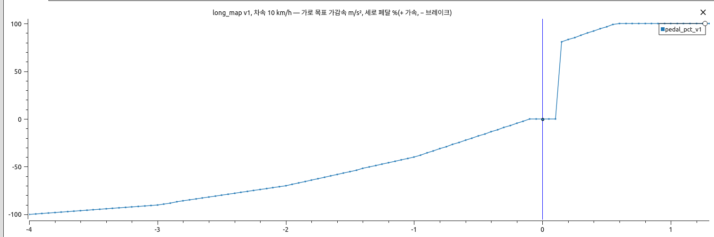
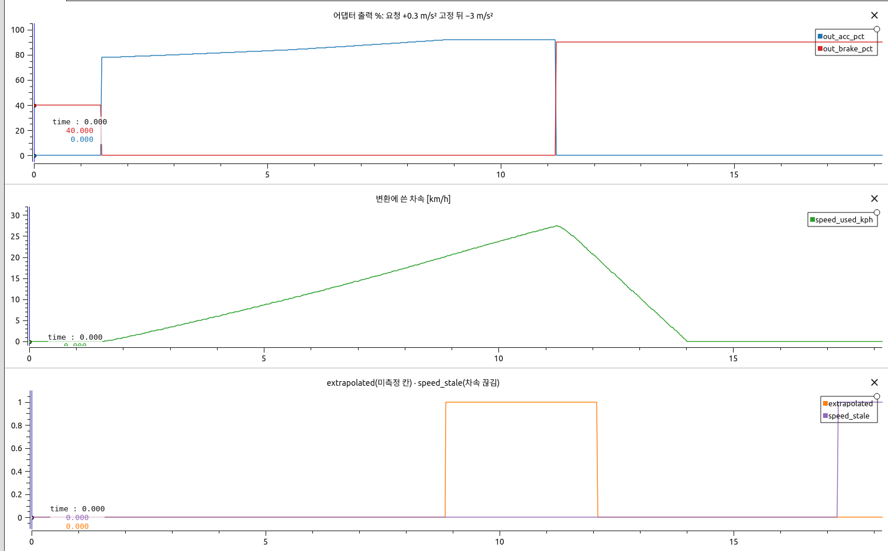
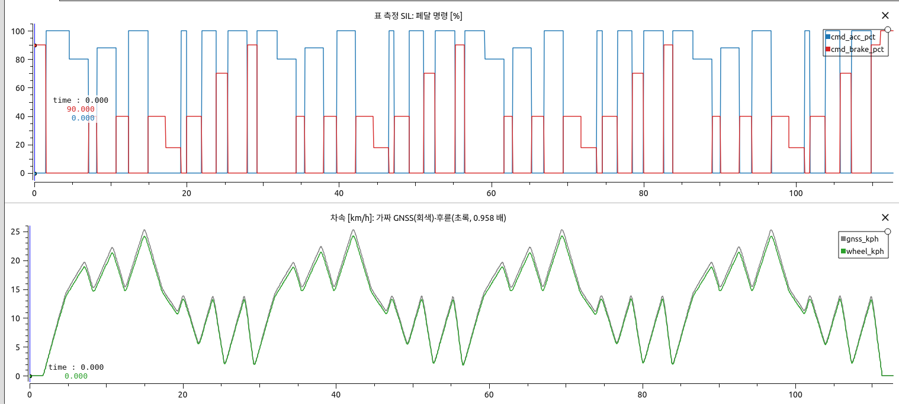
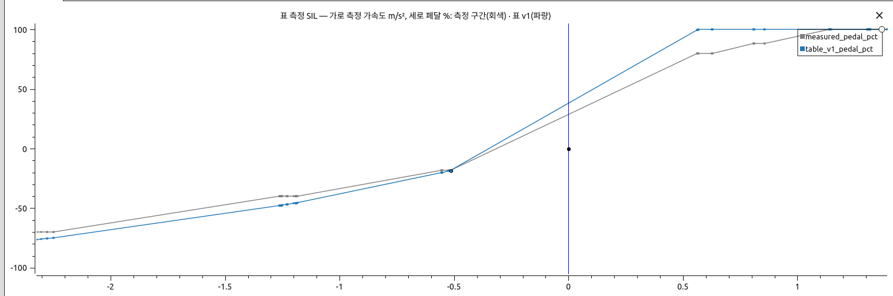
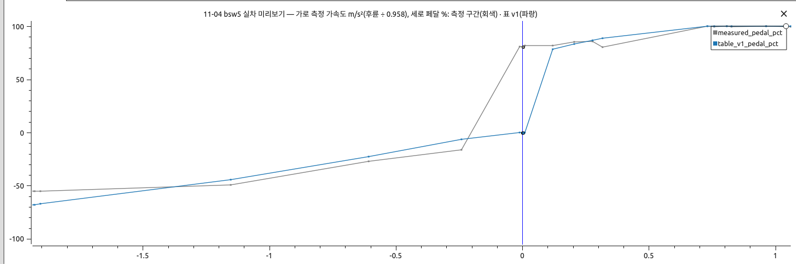
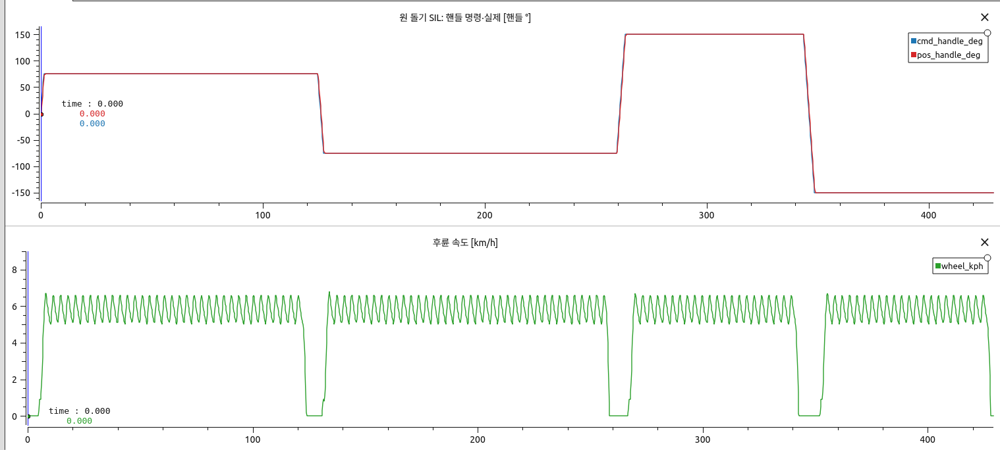
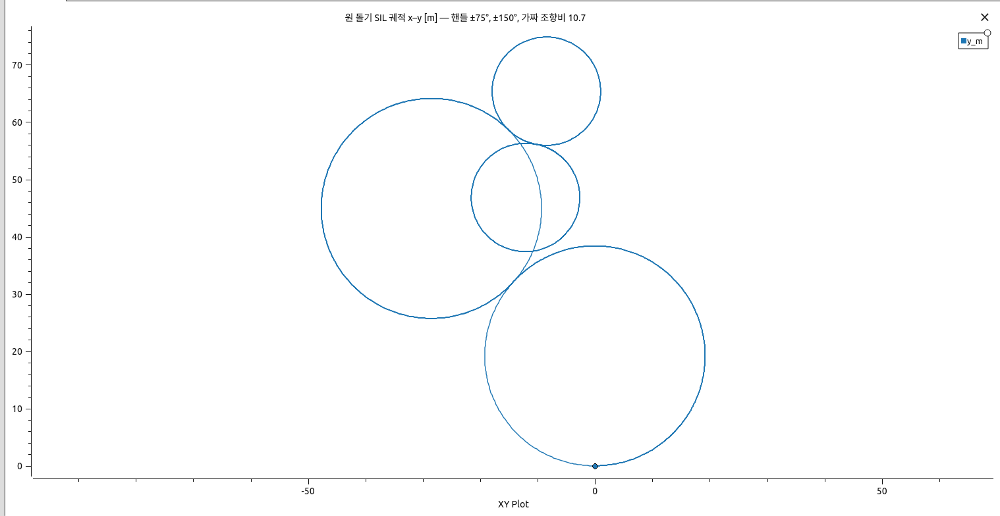
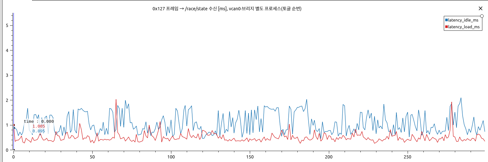

2026-11-06 엔진룸·경기 신호 보고서의 후속 · 모델·로컬라이제이션 팀과 운용 담당을 위한 기술 보고서
요약 — 지시서의 남은 개발 항목(WP2·WP3·WP7)을 구현했다. 어댑터는 이제 차속을 받아 속도 구간별 표로 페달 % 를 정하고, 표는 지금 동작과 같은 값(v1)으로 시작한다. 11-14 절차에 필요한 원 돌기 시험, 표 갱신 도구, 원 맞춤 분석, 현장 점검표를 만들었고, 경기 날 시작 점검과 재개 절차를 넣었다. 모델 팀 확인에 따라 /control/target 은 20 Hz 로 반영했다. 모든 시험은 가짜 차량과 저장된 로그로 했다. 실차 표는 아직 하나도 없고, 저속 유지값은 짐작한 잠정값이다. 부록 A 의 그림은 모두 PlotJuggler 화면 캡처다.
speed_ctrl_circle.yaml)은 11-04 불감대에서 짐작한 값이고 가짜 차량에서만 돌렸다. SIL 에서도 목표 5 km/h 에 약 5.0~6.8 km/h 로 흔들린다. 6 km/h 로는 상한 8 km/h 에 닿을 뻔해 기본값을 5 km/h 로 내렸다.| WP | 내용 | 개발 PC 에서 확인한 것 | 남은 것 |
|---|---|---|---|
| WP-1·0·1 | 폐기 설계 제거, 1차 업데이트, /race/state | 이전 보고서 + vcan0 재확인(표 II) | 대회 PC 판정, 실물 프레임(11-23) |
| WP2 | 속도별 표 long_map, 차속 구독, 상태 필드 | 단위 42 통과, 회귀(1차원과 같은 출력), 실제 노드 SIL | 실측 표(11-14~) |
| WP3 | fit_long_map, circle_test, fit_circle, 점검표 | 단위 19 통과, 전 과정 SIL, 11-04 로그 시운전 | 실제 GNSS bag |
| WP7 | 시작 점검, 경기 날 절차, 데이터시트 | bsw_up --sil ~ bsw_down 전체 실행(5장) | 대회 PC 리허설, 데이터시트 v1.0(실차 표 뒤) |
| WP4~6 | 실차 측정 6일 | — | 11-14 부터, 사람이 실행 |
| 시험 | 결과 |
|---|---|
| pytest(can_guard·서버·상태판·변환·표 도구·생성기) | 360 통과 |
rehearse_lift_guard | 31/31 |
| 비상 정지 E1~E7, P1·P2, 세션 SIL A·B·C | 통과. E1~E3 감지 최대 31.2 ms(기준 ≤ 40), E5 첫 프레임 약 60 ms(기준 ≤ 100) |
| 트랙 리허설(20 Hz 입력) | 17/17 × 4 회 |
r_race vcan0·브리지 별도 프로세스 | 시나리오 10 개 통과, 지연 중앙 0.92 ms / 부하 시 0.44 ms(기준 ≤ 5) |
adapter_cruise_check | 히스테리시스 0 회/분, 예전 동작 1,498 회/분(입력 고정, 폐루프 효과는 여전히 미검증) |
sil_engine_room | map·fit·circle 전부 통과(3·4장) |
bsw_test/00_SAF_estop/results/sil_20261106_234901_junhyeok-960QHA/, data/sil/. 시험 중 잡은 버그 1건: 2차원 표를 쓰면 어댑터 시작 로그가 없는 속성을 읽어 죽었다. 단위 시험은 못 잡았고 SIL 이 잡았다.모델 팀 확인으로 /control/target 은 20 Hz(50 ms)다. 끊김 기준 150 ms 는 3 주기 여유다. 이전 보고서의 위험(10 Hz 에서 4 회 중 1 회 159 ms 래치)은 해소됐고, 트랙 리허설도 20 Hz 로 바꿔 4 회 모두 통과했다. 다만 모델 프로세스가 100 ms 이상 멈추면 여전히 래치가 걸리므로, 연습 주행에서 출력 간격 기록을 요청한다(데이터시트 07 시트 1-2).
모델 ─/control/target 20 Hz→ cmd_adapter ─공유메모리 50 Hz→ can_guard ─0x210→ 차량
↑ 조향 표(타이어 → 핸들)
↑ long_map(가감속·차속 → 페달 %) ← /control/status/wheel_info(0x201 평균)
측정: circle_test → profile_gen ─공유메모리→ can_guard(핸들각 직접, 어댑터 없음)
갱신: CAN 로그 + GNSS bag → fit_long_map / fit_circle → 추천 파일 → 사람 확인 → yaml 수정·커밋·이력
config/long_map.yaml 은 행이 차속, 열이 목표 가감속, 값이 페달 % 다. 지금은 v1 — 기존 1차원 표를 0~20 km/h 행에 복사했고 30 km/h 이상은 미측정이다. 그래서 지금 차의 동작은 바뀌지 않는다(회귀 시험으로 확인). 11-14 부터 칸을 채운다.
| 상황 | 동작 | 상태 표시(AdapterStatus) |
|---|---|---|
| 표 안 | 이중선형 보간. 가속 쪽·브레이크 쪽을 따로 | speed_used_kph, long_map_version |
| 미측정 칸 | 같은 쪽 가장 가까운 측정 칸 값 | extrapolated |
| 표 밖 속도·가감속 | 끝값 고정, 경고 로그(1 초에 1 회) | long_map_clamped |
| |a| 0.03~0.10 | 이전 상태 유지(히스테리시스) | — |
| 차속 < 3 km/h, 가속 중 | 가속 % 하한 75(출발 불감대) | — |
| 차속 끊김 > 0.1 s | 마지막 값 유지. 못 받았으면 0 km/h | speed_stale |
| 표 파일을 못 읽음·형식 틀림 | 어댑터가 시작하지 않는다 | — |
| # | 지시서 | 구현 | 이유 |
|---|---|---|---|
| E-10 | 가속도 칸 14 개 | −0.1·0.1·0.13·0.57 추가 | 없으면 "1차원과 같은 출력" 관문을 못 지킨다 |
| E-11 | raw 0x201 구독 | wheel_info 구독 | 같은 값인데 raw 는 약 545 프레임/s. 어댑터는 워치독에 직결돼 부담을 피했다 |
| E-12 | track.yaml 안에 | 별도 long_map.yaml | ROS 파라미터 배열은 null 을 못 담는다 |
| E-13 | 표본 < 3 이면 차단 | 그 칸만 빼고, 쓸 칸이 없을 때 차단 | 글자대로면 "각 2회" 계단은 늘 차단. 대신 점검표를 칸당 3회로 적었다 |
| E-14 | 이중선형 | 쪽별 보간, 첫 칸 아래 포화 | 0 과 75 % 를 이으면 차가 안 움직이는 % 가 나온다 |
SIL(Fig. A2): 시험용 표를 넣고 +0.3 m/s² 를 고정하면 가속이 5 km/h 에서 81 %, 20 km/h 에서 92 % 로 올라가고, 표본 약 490 개 모두 예측과 1.5 % 안이다. 미측정 구간에서 extrapolated 가 켜지고, 0x201 을 끊으면 speed_stale 이 켜진다.
표를 자동으로 바꾸지 않는다. 추천 파일만 쓰고, 사람이 보고 고친 뒤 커밋해 이력에 적는다. 확인할 수 없는 검사는 통과가 아니다. 420 s 로그를 0.6 s 에 처리한다(현장 목표 1 분, 개발 PC).
| 검사 | 기준 | 재는 법 / 확인 불가 |
|---|---|---|
| GNSS 품질 | fix ≥ 90 % | INS 상태. odom 만 있으면 확인 불가 |
| 다른 조작 | 없을 것 | 앱 En, RES, 0x210 > 70 프레임/s, ESTOP 이벤트. 이벤트 파일 없으면 확인 불가 |
| 물리 한계 | 감속 ≤ 4.5, 가속 ≤ 1.6 m/s² | 구간 평균 |
| 시간 어긋남 | ≤ 0.05 s | 후륜·GNSS 가속도 상호상관. 겹침 < 20 s 면 확인 불가 |
| 표본 | 칸당 ≥ 3 구간 | E-13 |
| 경사 | |피치| ≤ 2° | 피치 없으면 확인 불가 |
| 급변 | 기존 대비 ≤ 20 % | 걸리면 사람 확인 |
| 표 형식 | 단조·부호 | 어댑터와 같은 검사 |
측정 칸만 바꾸면 옛 복사값과 값이 뒤집힐 수 있어, 그런 옛 칸은 미측정으로 되돌린다. SIL 에서 처음 드러난 문제다. 또 v1 표는 값이 대부분 11-04 저속에서 나온 복사본이라, 첫 실측에서 급변으로 차단될 가능성이 높다(SIL 도 그랬다, 표 VI). 그때는 report.md 를 보고 사람이 판단해 반영한다. 그것이 설계 의도다.
| 입력 | 종료 | 내용 |
|---|---|---|
| 11-04 bsw5 CAN, 미리보기(t 15~430 s) | 0 | 구간·칸 표. 추천 없음 |
| 11-04 bsw4 CAN(앱 조작 섞임), 미리보기 | 3 | 앱 En=1 t=23 s 로 차단. 지시서의 11-03 로그는 저장소에 원본이 없어 대신했다 |
| SIL CAN + 가짜 GNSS, 표 v1 | 3 | 급변으로 차단: −1.5 m/s² −55 → −40 % |
| SIL, 측정값을 기존 표로 | 0 | 추천 파일 생성, 어댑터 검사 통과, 정확도 표 출력 |
| SIL, odom 만 있는 bag(sqlite3) | 3 | GNSS 품질·경사 확인 불가 |
| 합성 로그 19 개 시험 | — | 앱·송신자 둘·fix·시간차·피치·급변·물리 한계·표본·입력 오류 각각 |
fit_maps.read_bag 재사용). 대회 PC 에서 확인 필요.11-04 실차 미리보기(Fig. A5, 참고값). GNSS 없이 후륜 ÷ 0.958 로 본 값이다. 표 v1 이 약속한 가속도와 비교하면 10·15 km/h 가속 오차 평균 42·47 %, 브레이크 5·10 km/h 29·38 %(구간 1~2 개), 15 km/h 18 % 다. 20 km/h 순항은 약 81 % 에서 +0.1 m/s² 근처로, 코너와 경사가 섞였다. 지시서의 ±20 % 관문을 넘으려면 표를 재야 한다는 뜻으로 읽어야 하며, 이 수치로 표를 바꾸지는 않았다.
circle_test 는 핸들각을 직접 명령한다. 조향 표를 재는 시험이라 표를 통과하면 안 되기 때문이다(E-7). 새 코드를 줄이려고 기존 profile_gen 세션을 쓴다 — 회차마다 Enter, 차속 상한, 0x201 끊김, can_guard 개입 시 중단, 끝내기 브레이크 100 % 가 그대로 적용된다. --dry-run 이 공간과 시간을 먼저 보여 준다.
| 핸들 ° | 예상 타이어 ° | 지름 m | 회차 s |
|---|---|---|---|
| +37 / −37 | 4.29 / 3.41 | 63 / 79 | 358 / 450 |
| +75 / −75 | 7.25 / 6.75 | 37 / 40 | 212 / 228 |
| +112 / −112 | 9.60 / 9.22 | 28 / 29 | 160 / 167 |
| +150 / −150 | 11.50 | 23 | 134 |
fit_circle 은 궤적에 원을 맞춰 R → 타이어 = atan(2.36/R), 영점, 좌우 실효 조향비를 내고 steer_map 을 추천한다(자동 반영 없음). 호 < 270°, 맞춤 RMS > 0.5 m, 최고 > 9 km/h 회차는 뺀다(잠정). SIL 에서 가짜 차량 조향비 10.7 을 좌우 네 회차 모두 10.70 으로 되찾았다 — 가짜 차량에는 슬립·언더스티어가 없으므로 도구 동작 확인일 뿐 정확도 근거는 아니다.
저속 유지 주의(Fig. A7). 불감대 75 % 위에서만 힘이 나오는 차라 PI 가 톱니로 돈다. SIL 에서 목표 5 km/h 에 약 5.0~6.8 km/h(평균 5.8)다. 가짜 차량의 값이고 실차는 다를 수 있다. 상한 8 km/h 를 넘으면 세션이 멈출 뿐 위험하지는 않지만, 불감대·유지 % 를 첫 회차에서 확인해야 한다.
tools/bsw/race_up_check.py: /race/state 발행, 0x202 값(표시만, 0x203 송신 없음), 조향 표·long_map 버전·source. bsw_up·bsw_status 가 부르고, 세션 기록에도 남긴다. 실패해도 BSW 를 끄지는 않고 ❌ 로 알린다 — 매뉴얼은 ❌ 면 출발하지 말라고 적었다.FIELD_MANUAL 5-1절: 브리핑 확인 6 항목, 중단 → 재개(앱은 차가 선 뒤에만 해제, 원격을 켠 채 자율 불가, 재시작은 KIAPI 허용 답변·브리핑 뒤).bsw_test/09_ENGINE_ROOM/docs/checklist.md, 이력 docs/engine_room_map_history.md, 메모장 ★ 11-14 절.bsw_up --sil --no-rt --no-ui → 시작 점검 전부 ✅ → 20 Hz 입력으로 자동 arm(입력 나이 1~35 ms), 타이어 0° = 핸들 −9°, +0.3 m/s² → 가속 87.7 %, −3 m/s² → 브레이크 90 %, 깃발 S02 → seen_go·GO, 입력 끊김 → 고장 래치 → STOPPED(브레이크 유지) → bsw_down ESTOP 브레이크 뒤 정리·압축. 이 시험의 가짜 차량은 물리 모델이 없어 차속 표시가 216 km/h 까지 올라갔다 — 실제 응답이 아니다. BSW 는 차속을 제한하지 않으니 상한은 모델 몫이다.~/git/A1-BSW 가 아닌 체크아웃에서 어댑터·race_state_publisher 가 시작하다 죽었다 → 세션 설정의 경로를 실제 저장소로 바꾼다(대회 PC 는 값이 같다). ② bringup 이 실패하면 세션 링크가 없어 안내된 bsw_down --force 가 동작하지 않았다 → 링크를 먼저 만든다. ③ 이 개발 PC 는 시스템 python 에 python-can 이 없어 임시 경로를 지정했다(대회 PC 는 설치돼 있음, 코드 문제 아님).| 누구 | 내용 |
|---|---|
| 로컬라이제이션 | bag 에 INS 토픽(품질·피치) 포함 확인 — 없으면 표 갱신이 전부 차단된다. 토픽 이름(TODO-5): 기본 /gsof_client/gsof/ins_solution_49, /gsof_client/odom, 옵션으로 바꿀 수 있다 |
| 모델 | 속도별 표가 들어가도 인터페이스는 같다. extrapolated·speed_stale 을 볼 것. 20 Hz 출력 간격 기록 |
| 운용 | 원 돌기 공간(지름 최대 약 80 m), 약 31 분. 모자라면 --handles 75,112,150 |
| 대회 PC | 아래 7장 명령 |
# 대회 PC — 판정. sudo 비밀번호 1 회(vcan0 없으면 먼저 sudo bash sil/vcan/vcan_up.sh) bash bsw_test/00_SAF_estop/scripts/run_sil_check.sh --rt auto --track python3 safety/can_guard/sil_tests/r_race.py --interface socketcan --channel vcan0 --latency 300 --load python3 bsw_test/09_ENGINE_ROOM/scripts/sil_engine_room.py --out <폴더> bash tools/bsw/bsw_up.sh --sil --no-rt --no-ui # 그리고 bsw_down.sh — 시작 점검 출력 확인(개발 PC 는 통과)
fit_long_map·fit_circle 첫 실행(INS 메시지 필드 확인).모두 PlotJuggler 3.17 화면 캡처다. 입력 data/pj/*.csv, 레이아웃 pj_layouts/*.xml. 왼쪽 위 작은 "time" 글자와 세로선은 PlotJuggler 시간 표시로 값이 아니다. A2~A4, A6~A8 은 가짜 차량 값이다.

long_map v1, 차속 10 km/h. 가로 목표 가감속 m/s², 세로 페달 %(+ 가속, − 브레이크). ±0.1 안은 0, +0.1 에서 75 % 로 뛴다(출발 불감대). 지금은 0~20 km/h 행이 같고 30 km/h 이상은 미측정이다.
extrapolated, 끝에서 0x201 을 끊어 speed_stale.
adapter_long_check --plan SIL. 14 km/h 근처에서 가감속 7 단계를 4 회 반복. 아래 후륜은 가짜 GNSS 의 0.958 배(11-04 비율).


circle_test SIL, 핸들 ±75°·±150°. 위: 핸들 명령·실제. 아래: 목표 5 km/h 후륜 속도 — 약 5.0~6.8 km/h 톱니(4.2절).

/race/state 수신, vcan0·브리지 별도 프로세스. 파랑 부하 없음(중앙 0.92 ms), 빨강 실제 버스 부하 + 디코더(중앙 0.44 ms). 가로축은 토글 순번, 기준 5 ms. 이전 보고서의 virtual 버스 값과 비슷하다.| 항목 | 값 | 근거 |
|---|---|---|
/control/target 주기 | 20 Hz | 모델 팀 확인 |
| 끊김 기준 / 차속 나이 | 150 ms / 0.1 s | track.yaml, 지시서 2.2 |
| 출발 하한 | 75 %, 3 km/h 아래 | 11-04 불감대 70~80 % |
| 표 갱신 표본 / 급변 | 칸당 3 구간 / 20 % | 지시서 2.3 |
| 구간에서 버리는 앞부분 | 가속 0.7 s, 브레이크 0.4 s | 11-04 지연 |
| 원 돌기 속도 / 상한 | 5 / 8 km/h | 지시서 ≤ 8, SIL 흔들림 |
| 저속 유지 % (차속 5·10) | 76·78 %, 출발 80 % | 11-04 에서 짐작, 미검증 |
python3 -m pytest -q tools/engine_room/test_fit_tools.py ros2_ws/src/a1_control_adapter/test/test_conversion.py source /opt/ros/humble/setup.bash && source ros2_ws/install/setup.bash python3 bsw_test/09_ENGINE_ROOM/scripts/sil_engine_room.py --out <SIL> python3 safety/can_guard/sil_tests/r_race.py --interface socketcan --channel vcan0 --out <L0> --latency 300 python3 safety/can_guard/sil_tests/r_race.py --interface socketcan --channel vcan0 --no-scenarios --latency 500 --load --out <L1> python3 make_data.py ../.. . <SIL> <L0> <L1> # CSV. fit_long_map 미리보기 포함 XTOOLS_ROOT=<풀어 둔 폴더> python3 pj_capture.py . # PlotJuggler + Xvfb 캡처 google-chrome --headless --no-pdf-header-footer --print-to-pdf=report.pdf report.html